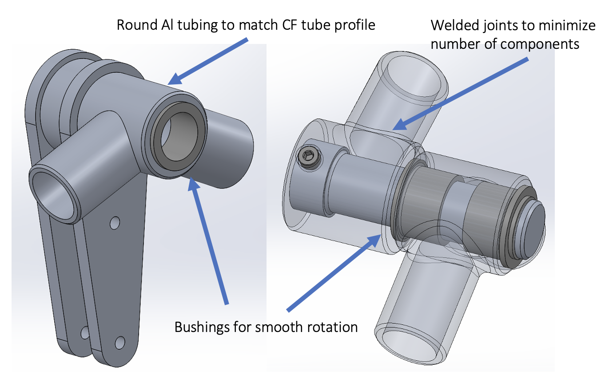
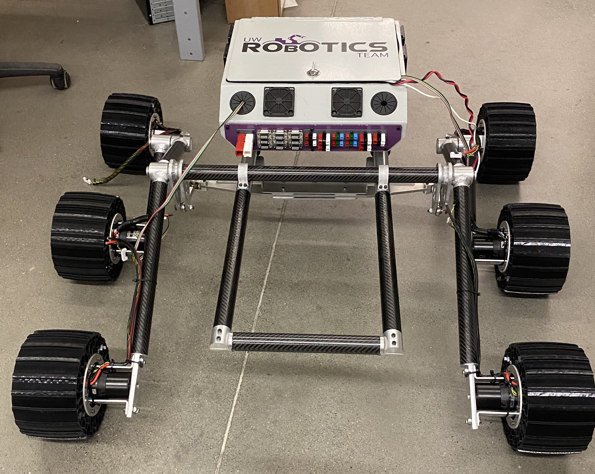

Problem Overview
Background
The design of Mars rovers has evolved significantly since the first missions, with a focus on enhancing mobility and durability in the harsh Martian environment. Central to this evolution is the rocker-bogie drivetrain, a suspension system that provides superior terrain adaptability and stability over uneven surfaces.
The rocker-bogie configuration consists of linked rockers and bogies, allowing the rover to maintain contact with the ground while navigating obstacles. The joints within this drivetrain are critical for enabling movement and articulation, facilitating the rover's ability to traverse rocky and varied terrains. As missions advance, optimizing these joints is essential for improving the rover's overall performance and longevity.

Rocker-Bogie Drivetrain
Strategy
Research
Understanding the dynamics of rocker-bogie drivetrains is crucial for enhancing rover mobility. Key failure modes include joint fatigue, excessive deflection, and material degradation due to environmental factors. Analyzing stress concentrations and load distributions is essential in predicting potential joint failures.

Labelled Diagram
Free-Body Diagram
Various material properties, such as tensile strength and fatigue limits, must be considered during the design process. Additionally, the interaction between the rocker-bogie segments impacts the overall performance; ensuring that the joints can accommodate these dynamic loads is vital for successful operation.
Development
Conceptual Design
My concept design employs welded aluminum tubing interfacing with carbon fiber tubing, utilizing bushings to facilitate rotation between the inner and outer components. This innovative approach aims to balance strength and weight reduction while maintaining optimal functionality within the drivetrain.
Material Selection
The materials considered for the joint design include Aluminum and Steel.
The table to the right summarizes the differences between these materials. Aluminum was ultimately selected due to its light weight and corrosion resistance. Stainless steel was also an option, but is more difficult to fabricate and too heavy for this application.
Joint Stack-up
At the time of writing this, the image to the right is the only sketches I have an image of. There were many, many iterations of the stack-up. Ease of assembly and long-term deterioration were the main considerations during this process.
Materials Comparison

Stack up Sketches
Development
Detailed Design & Analysis
The redesign achieved a 32% reduction in weight compared to the previous joint design and decreased the component count by 45%. By optimizing the lengths of the rocker-bogie segments—an effort supported by my partner's MATLAB analysis—I improved the rover’s overall dynamics. The joint was meticulously modeled in SolidWorks, and finite element analysis (FEA) was conducted on critical parts based on the load cases identified in the research phase, ensuring that the design could withstand the harsh conditions of Mars. 
Analysis
Deflection and bending were evaluated in this design using hand calculations. Load cases were defined and calculated, to better understand the potential failure points and add stiffness to the design.
Manufacturing
Results
The complete design process resulted in a robust, lightweight rocker-bogie drivetrain joint that significantly improved the Mars rover's performance.
Assembly
The reductions in weight and component count not only optimized the rover's dynamics, but also greatly simplified the assembly process.
- Reduced component count: Less components means less to assemble, reduction in vibration, and increased rigidity.
- Machining time: The use of stock Aluminum tubing = less material waste & reduced machining time
- Simplified subassembly inspection: Quality assurance in the future (disassembly/incorrect reassembly) improved as the majority of connections are welded.
Machined & Welded Joints
Moving Forward
Takeaway
This project emphasized the importance of system-level thinking during the conceptual design phase in mechanical engineering, particularly regarding manufacturing and assembly. By anticipating manufacturing challenges, I was able to develop a solution that minimized both complexity and weight. I also recognized that thorough research and an understanding of failure modes are essential for creating robust designs. Moving forward, I will apply these lessons to future projects, focusing on balancing innovation with practical constraints to ensure that designs are not only effective but also manufacturable and reliable.
